Serenity
Along with exploring the flora and fauna around me, I also enjoy capturing the enchanting beauty of nature. I feel nature has a magical way of inspiring creativity, and capturing its beauty through photography is a way of immersing myself in the wonders of our planet and sharing those mesmerizing moments with others. Glimpses of those are below, from different places around the world.
Tamsui Taiwan
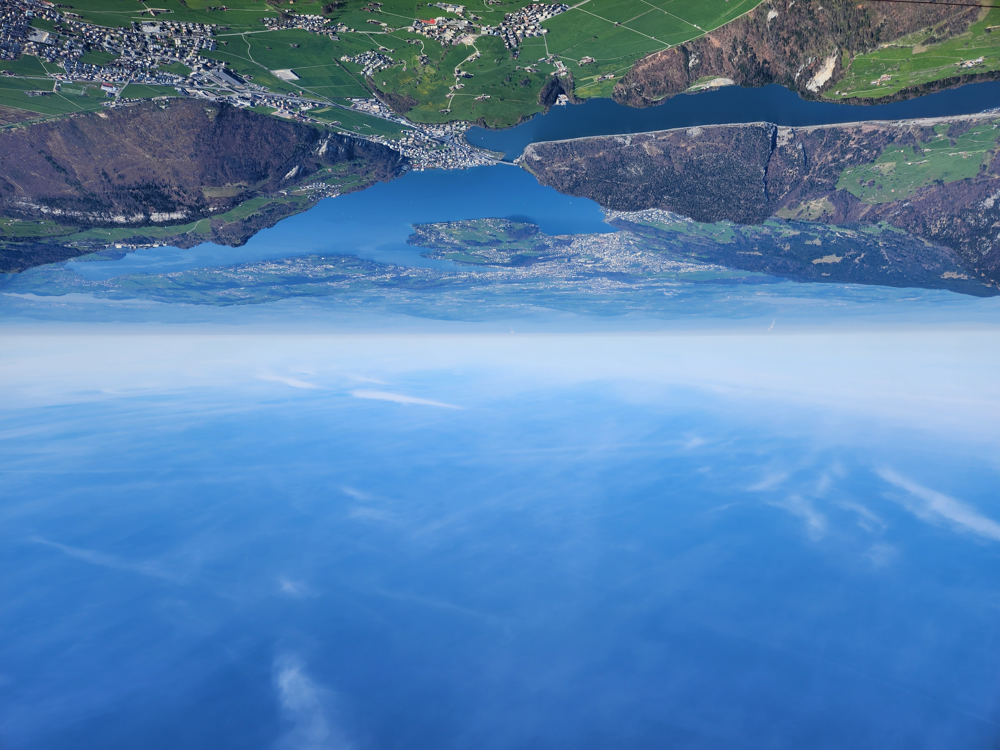Stanserhorn Switzerland
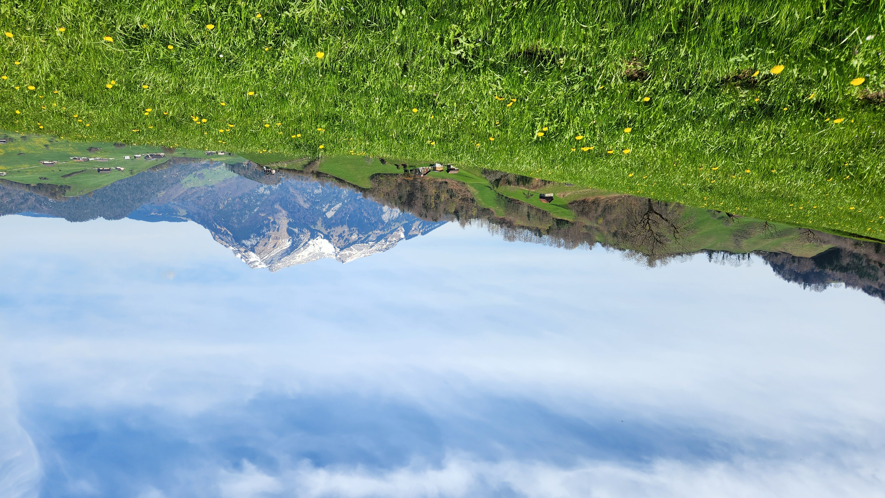Stanserhorn Switzerland
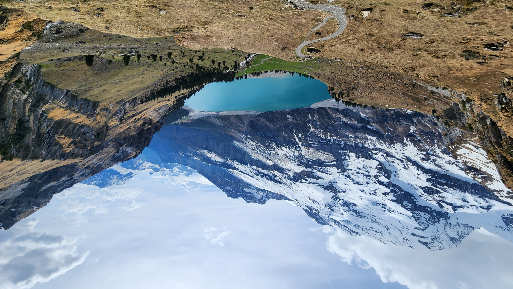Oeschinensee Switzerland
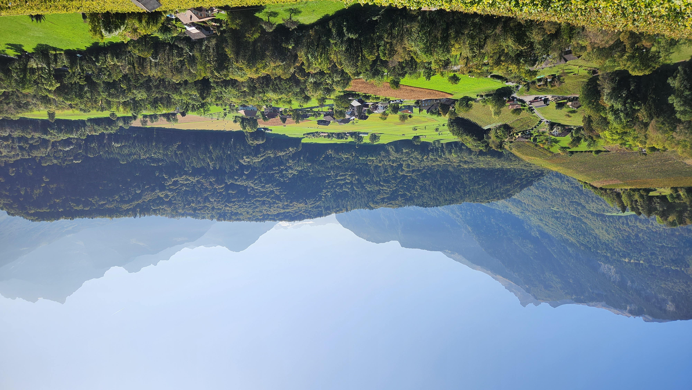Plambuit Switzerland
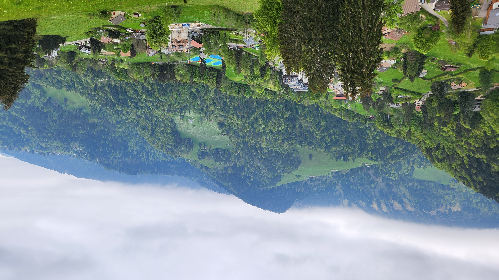Les Avants Switzerland
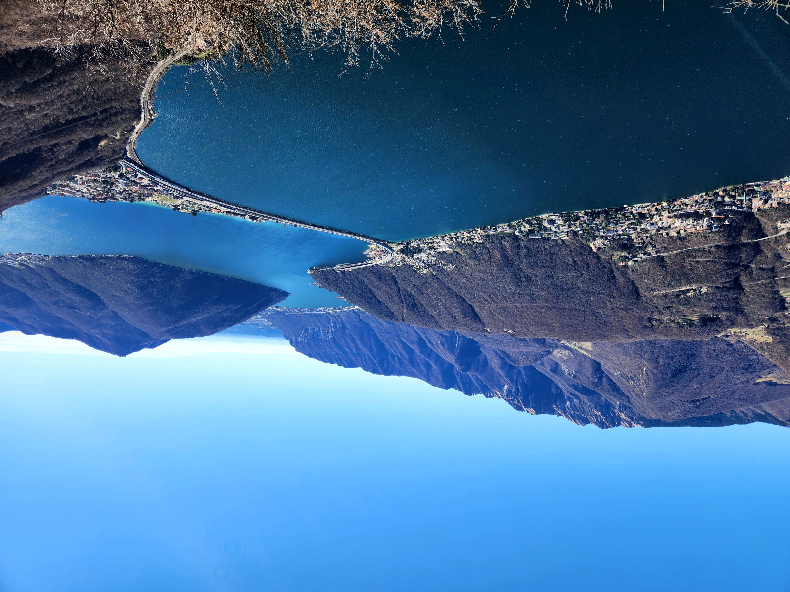Locarno Switzerland
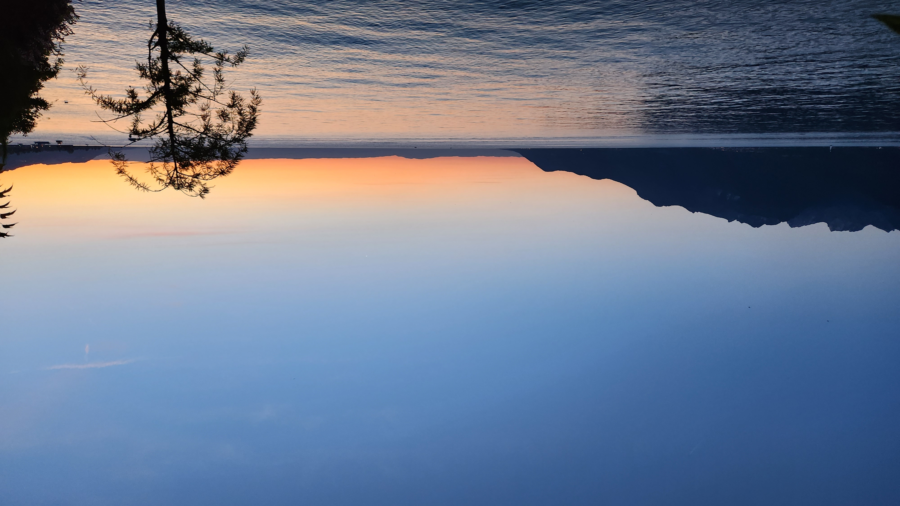Morcote Switzerland
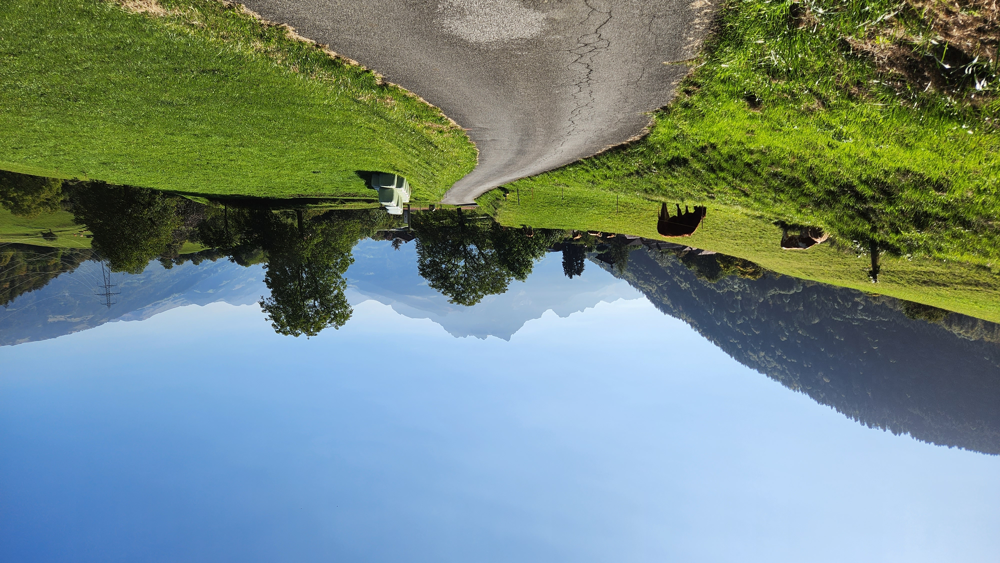Vex Switzerland

Lavertezzo Switzerland
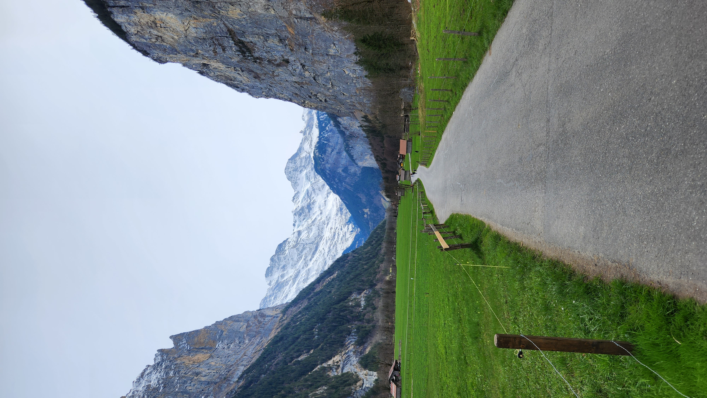Lauterbrunnen Switzerland
Lausanne Switzerland
Lausanne Switzerland
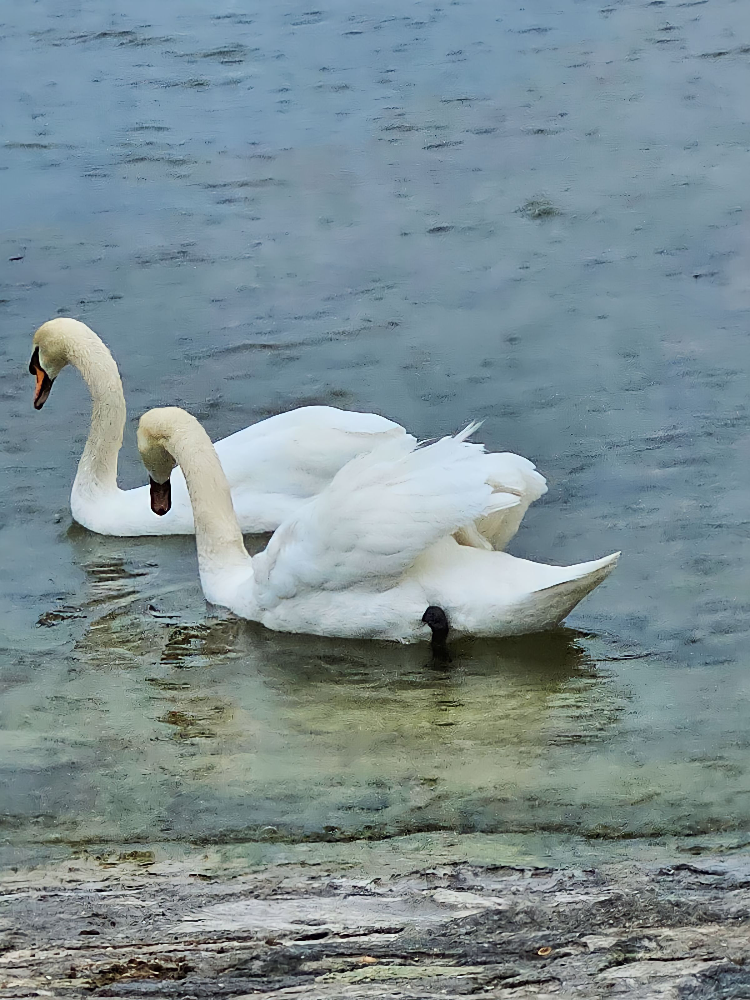Lausanne Switzerland

Les Avants Switzerland

Evian-Les-Bains France
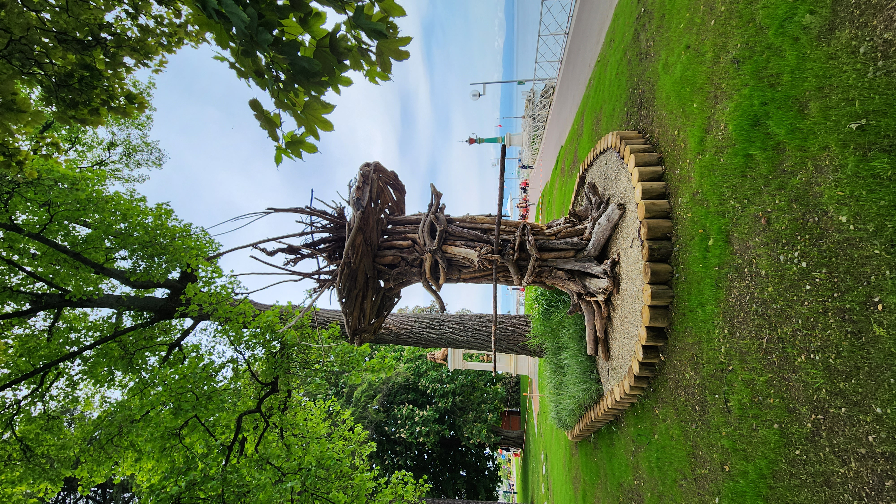Evian-Les-Bains France
Bath England
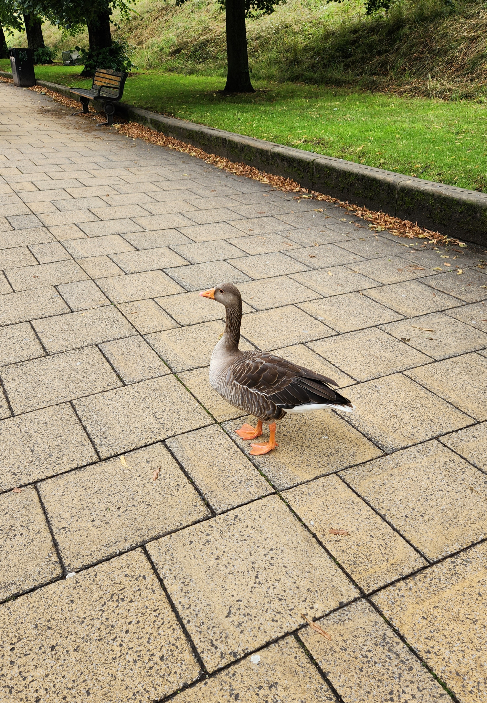York England

Turin Italy
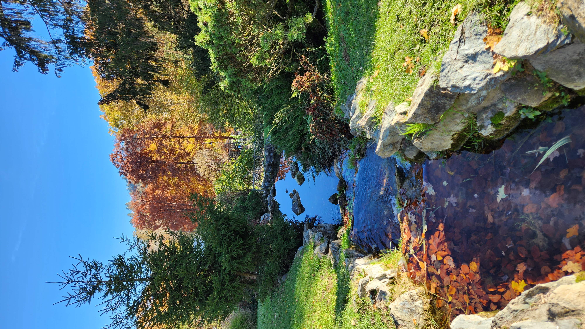Turin Italy
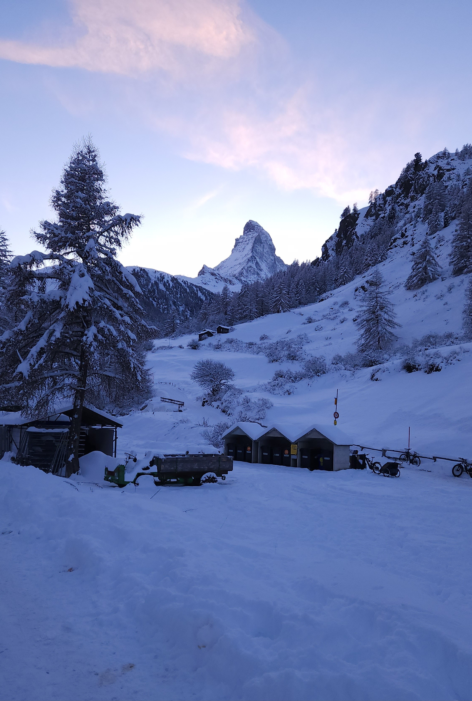Zermatt Switzerland
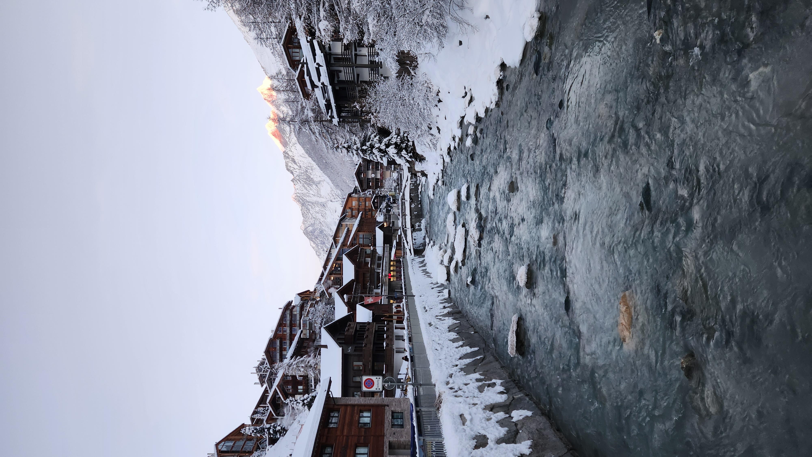Zermatt Switzerland